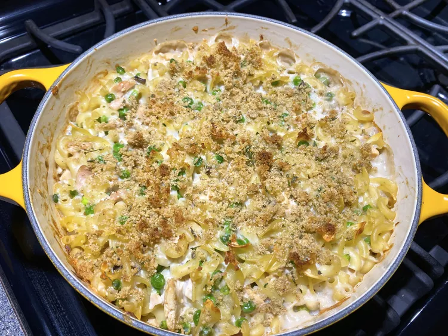

Campbell's Tuna Noodle Casserole

This tuna noodle casserole uses condensed cream of mushroom soup to
flavor a creamy sauce that is mixed with tuna, egg noodles, and peas,
topped with a crunchy bread crumb topping, and baked to perfection.
Ingredients
- 4 cups hot cooked medium egg noodles
-
2 (10.5 ounce) cans Campbell's® Condensed Cream of Mushroom Soup
(regular or 25% Lower Sodium)
- 2 (10 ounce) cans tuna, drained
- 2 cups frozen peas
- 1 cup milk
- 2 tablespoons dry bread crumbs
- 1 tablespoon butter, melted
Directions
- Preheat the oven to 400 degrees F (200 degrees C).
-
Stir cooked noodles, condensed soup, tuna, peas, and milk in a 3-quart
casserole.
-
Bake in the preheated oven until hot, about 30 minutes; stir well.
-
Mix bread crumbs with melted butter in a bowl; sprinkle over tuna
casserole and continue to bake until bread crumbs are golden brown and
crispy, 5 minutes more.
Tips
-
In place of buttered breadcrumbs, top with 1/2 cup shredded Cheddar
cheese.
-
Substitute about 2 cups of cooked cubed chicken or Swanson Chunk
Chicken, drained, for tuna.
Tips